1084B18 ENGINE OIL PUMP, REMOVED - CHECK AT BENCH
- Path
- Procedures > 10 ENGINE > 1084 ENGINE LUBRICATION > 1084B ENGINE OIL LUBRICATION CIRCUIT > 1084B18 ENGINE OIL PUMP, REMOVED - CHECK AT BENCH
- Kind
- repair procedure (removal / refitting; the operation number is the code)
- Applies to
- all engines; all production periods
- Interactive page
- https://sloeber94.github.io/elrnDB-fCrm/en/#/194002200
Applies to: engines: 2.2; all production periods
 Removing
Removing
 Refitting
Refitting1. Undo the cap (1a) and remove the engine oil pressure relief valve (1b).
2. Undo the bolts (2a) and remove the pump cover (2b).
3. Remove the drive gear.
4. Remove the driven gear.
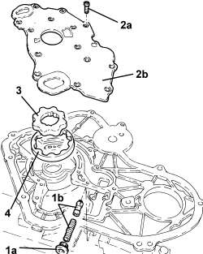
Applies to: engines: 2.2; all production periods
Refitting
Removing- Check that the radial clearance between the driven gear and the pump casing is within the recommended limits; if this is not the case, replace the oil pump assembly.
Measurement | Value | Validity |
|---|---|---|
Radial clearance between driven gear and pump casing (mm) | 0.314 | 2.2 16V |
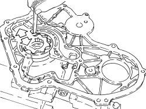
Applies to: engines: 2.2; all production periods
- Place the engine oil pump cover back in its housing and secure it using the bolts.
- Place the oil pressure relief valve in position and tighten the cap.
Applies to: engines: 1.9 JTD 16v; all production periods
Removing
Refitting1. Undo bolts (1a) and remove the oil pump cover (1b).
2. Remove the drive gear.
3. Remove the driven gear.
4. Undo the cap (4a) and remove the oil pressure relief valve (4b).
5. Remove the crankshaft front oil seal.
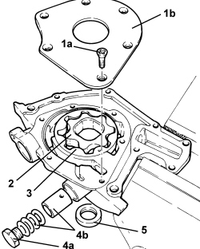
Applies to: engines: 1.9 JTD 16v; all production periods
Refitting
RemovingCheck that the radial clearance between the driven gear and the pump casing is within the recommended limits; if this is not the case, replace the oil pump assembly.
Measurement | Value | Validity |
|---|---|---|
Radial clearance between driven gear and pump casing (mm) | 0.080 ÷ 0.186 | 1.9 JTD 16V |
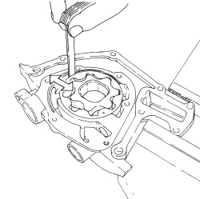
Applies to: engines: 1.9 JTD 16v; all production periods
Check that the axial clearance between the pump cover support plane and the top of the gears is within the recommended values; if this is not the case, replace the oil pump assembly.
Measurement | Value | Validity |
|---|---|---|
Endfloat between the pump casing support plane and the top of the gears (mm) | 0.025 ÷ 0.070 | 1.9 JTD 16V |
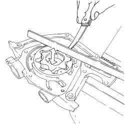
Applies to: engines: 1.9 JTD 16v; all production periods
Check that the height of the oil pressure relief valve spring is within the recommended values; if not, replace the spring.
Measurement | Value | Validity |
|---|---|---|
Height of engine oil pressure relief valve spring with test load of 8.78 - 9.66 daN (mm) | 36.0 | 1.9 JTD 16V |
Place the oil pressure relief valve in position and tighten the cap.
Place the driven gear in position.
Place the drive gear in position.
Fit the oil pump cover in its housing and tighten the bolts.
Applies to: engines: 2.4 JTD 20v; all production periods
Removing
RefittingPosition the engine oil pump in the vice fitted with protective jaws.
1. Fit the tool.
Description | Code | Function | |
|---|---|---|---|
1 | Counter-torque/Template | 1.870.799.000 | Oil pump timing |
2. Undo the (left hand0 bolt (2a) and remove the oil pump drive chain assembly (2b).
Remove the tool.
Description | Code | Function | |
|---|---|---|---|
. | Counter-torque/Template | 1.870.799.000 | Oil pump timing |
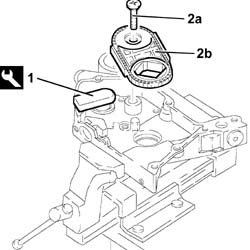
Applies to: engines: 2.4 JTD 20v; all production periods
1. Undo bolts (1a) and remove the oil pump cover (1b).
2. Remove the driven gear.
3. Remove the drive gear.
4. Undo the cap (4a) and release the oil pressure relief valve (4b).
Remove the crankshaft front oil seal.
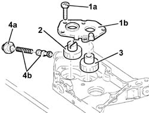
Applies to: engines: 2.4 JTD 20v; all production periods
Refitting
RemovingCheck the oil pump drive chain assembly for wear and, if necessary, replace it.
Check that the radial clearance between the gears and the pump casing is within the recommended limits; if this is not the case, replace the engine oil pump.
Subject | Value | |
|---|---|---|
. | Oil/water pump driveshaft seal | mm |
- | Radial clearance between gears and pump casing | 0.110 - 0.180 |
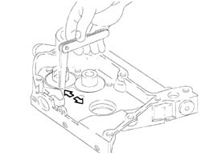
Applies to: engines: 2.4 JTD 20v; all production periods
Check that the endfloat between the top of the gears and the oil pump cover support plane is within the reocmmended values; if this is not the case, replace the engine oil pump.
Subject | Value | |
|---|---|---|
. | Oil/water pump driveshaft seal | mm |
- | Endfloat between top of gears and pump casing support plane | 0.016 - 0.086 |
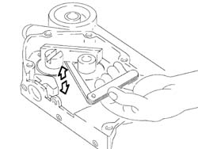
Applies to: engines: 2.4 JTD 20v; all production periods
Check that the height of the oil pressure relief valve spring is within the recommended values; if not, replace the spring.
Subject | Value | |
|---|---|---|
. | Oil/water pump driveshaft seal | mm |
- | Height of engine oil pressure relief valve spring | 11.96 - 12.76 |
Subject | Value | |
|---|---|---|
. | Oil/water pump driveshaft seal | mm |
- | Height released | 49.5 |
Fit the oil pressure relief valve and tighten the nut.
Value daNm | Fastening | Component | Ø | |
|---|---|---|---|---|
. | 1.6 ÷ 2.0 | Nut | PRESSURE RELIEF VALVE ENGINE OIL PUMP | - |
Fit the drive gear.
Fit the driven gear.
Fit the oil pump cover and tighten the fixing bolts to the recommended torque.
Value daNm | Fastening | Component | Ø | |
|---|---|---|---|---|
. | 0.8 ÷ 1.2 | Bolts | OIL/COOLANT PUMP DRIVESHAFT SEAL | - |
Position the engine oil pump in the vice fitted with protective jaws.
1. Fit the tool.
Description | Code | Function | |
|---|---|---|---|
1 | Counter-torque/Template | 1.870.799.000 | Oil pump timing |
2. Fit the oil pump drive chain assembly (2a) and tighten the (left hand) bolt (2c) to the recommended torque.
Value daNm | Fastening | Component | Ø | |
|---|---|---|---|---|
2c | 4.5 ÷ 5.5 | Left hand bolt | OIL PUMP GEARS | M10 |
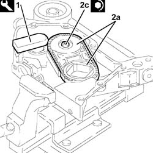
Applies to: engines: 1.9 JTD 8v; all production periods
Removing
Refitting1. Undo the bolts (1a) and remove the oil pump cover (1b).
2. Remove the drive gear.
3. Remove the driven gear.
4. Undo the cap (4a) and remove the oil pressure relief valve (4b).
- Remove the crankshaft front oil seal
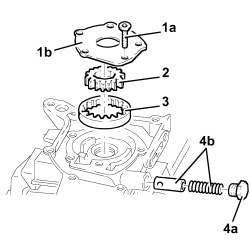
Applies to: engines: 1.9 JTD 8v; all production periods
Refitting
Removing- Check that the radial clearance between the driven gear and the pump casing is within the recommended limits; if this is not the case, replace the oil pump assembly.
Measurement | Value | Validity |
|---|---|---|
Radial clearance between pump casing and driven gear | 0.080 - 0.186 mm | 1.9 JTD 8V 1.9 JTD 16V |
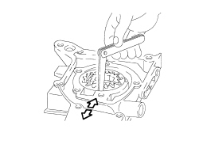
Applies to: engines: 1.9 JTD 8v; all production periods
- Check that the axial clearance between the pump cover support plane and the top of the gears is within the recommended values; if this is not the case, replace the oil pump assembly.
Measurement | Value | Validity |
|---|---|---|
Endfloat between the pump casing support plane and the top of the gears | 0.025 - 0.070 mm | 1.9 JTD 8V 1.9 JTD 16V |
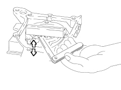
Applies to: engines: 1.9 JTD 8v; all production periods
- Check that the height of the oil pressure relief valve spring is within the recommended values; if not, replace the spring.
Measurement | Value | Validity |
|---|---|---|
Height of engine oil pressure relief valve spring with test load of 8.78 - 9.66 daN | 36.0 mm | 1.9 JTD 8V 1.9 JTD 16V |
Measurement | Value | Validity |
|---|---|---|
Length of engine oil pressure relief valve spring | 49.8 mm | 1.9 JTD 8V |
- Fit the engine oil pressure relief valve and tighten the cap.
- Fit the driven gear.
- Fit the drive gear.
- Fit the oil pump cover and tighten the bolts.
Applies to: engines: 1.8; all production periods
Removing
Refitting1. Undo the bolts (1a) and remove the oil pump cover (1b).
2. Remove the inner rotor (2a) and the outer rotor (2b).
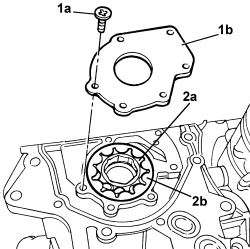
Applies to: engines: 1.8; all production periods
- Remove the crankshaft front oil seal
Applies to: engines: 1.8; all production periods
Refitting
Removing- Clean the rotors and the oil pump casing thoroughly.
- Visually inspect that there are no signs of wear on the rotors or the pump casing, replace any damaged components.
1. Fit the outer rotor (1a) keeping the reference (1b) in sight.
2. Fit the inner rotor (2a) positioning the guide seal (2b) on the marked surface (2c) inside the housing (2d) on the pump casing.
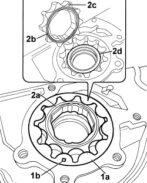
Applies to: engines: 1.8; all production periods
1. Check that the axial clearance between the pump cover support plane and the top of the gears is within the recommended values; if this is not the case, replace the oil pump assembly.
Measurement | Value | Validity |
|---|---|---|
Endfloat between the pump casing support plane and the top of the gears (mm) | 0.020 ÷ 0.058 | 1.8 |
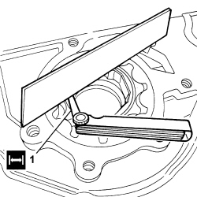
Applies to: engines: 1.8; all production periods
- Place the oil pump cover back in its housing and secure it using the bolts.
Applies to: engines: 1.8; all production periods
- Place the crankshaft front oil seal in position using the special tool.
Tool | Description | Function | Validity |
|---|---|---|---|
2000004100 | Fitting tool | Fitting crankshaft front oil seal | 1.8 |